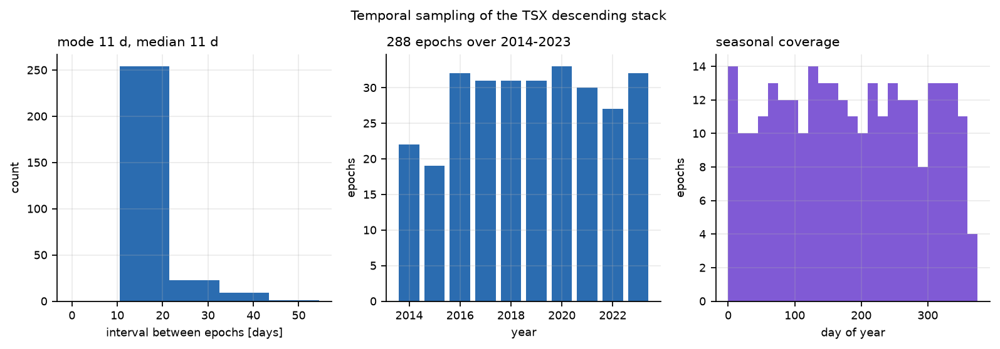
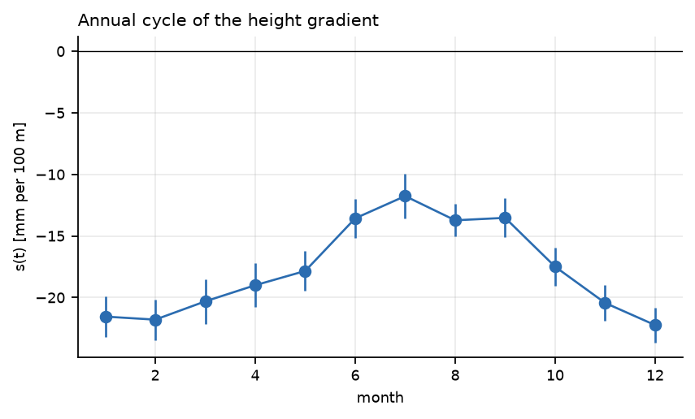
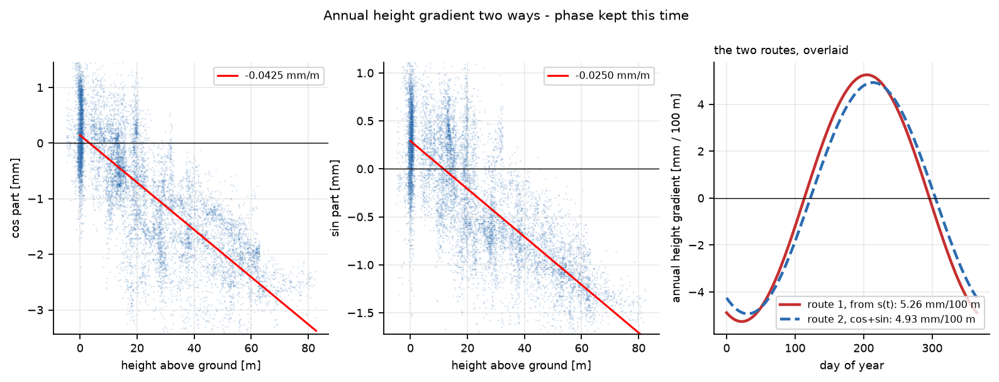
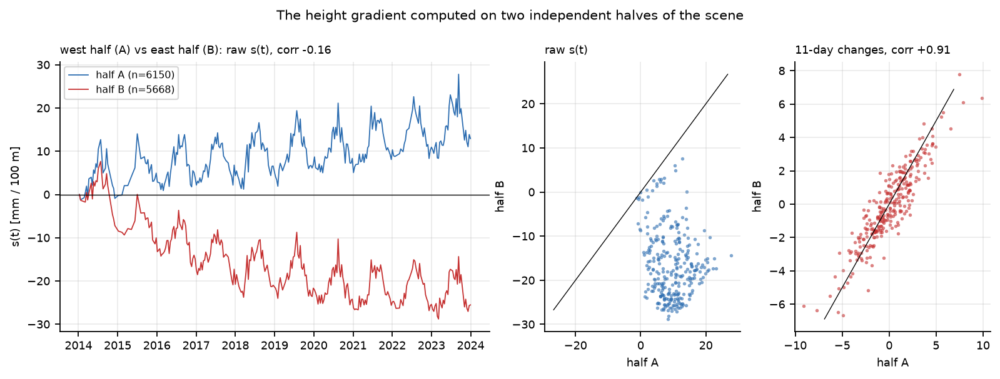
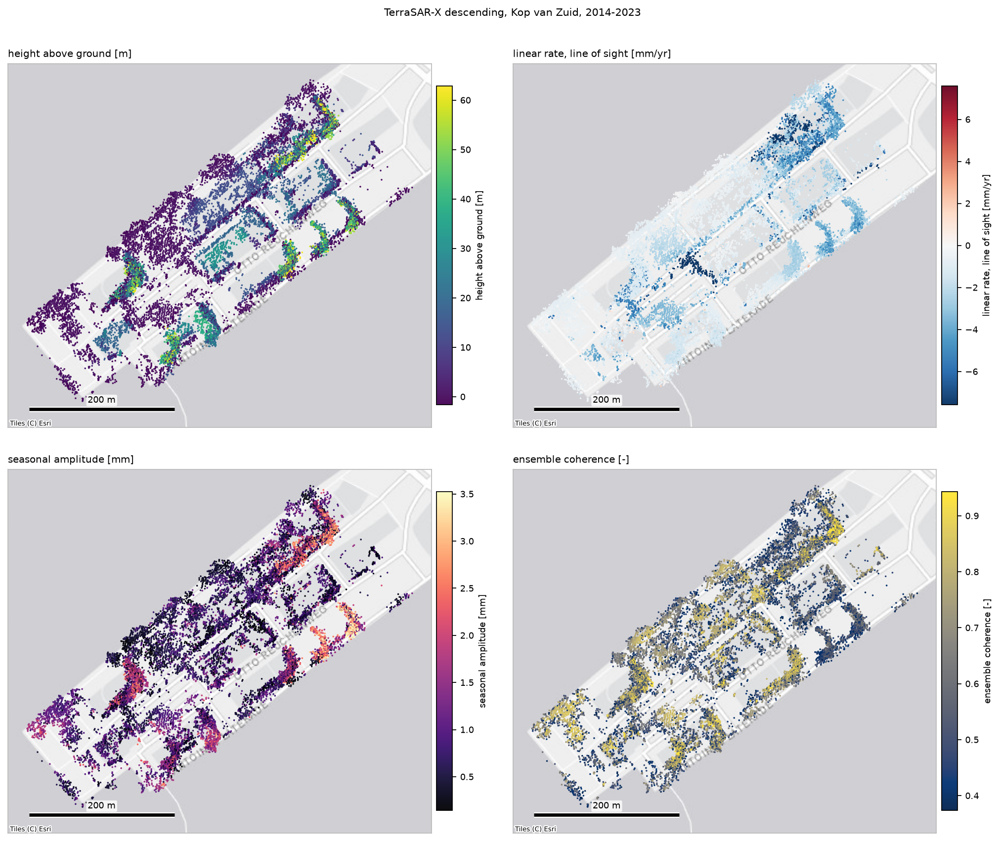
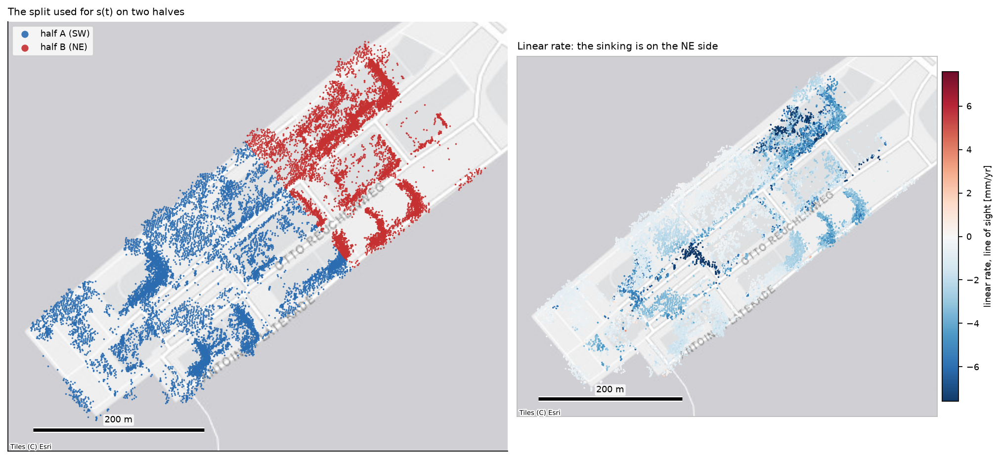
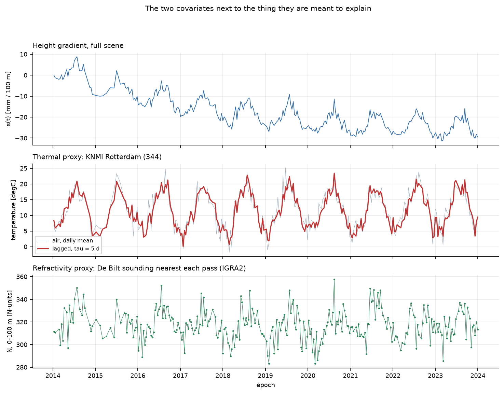
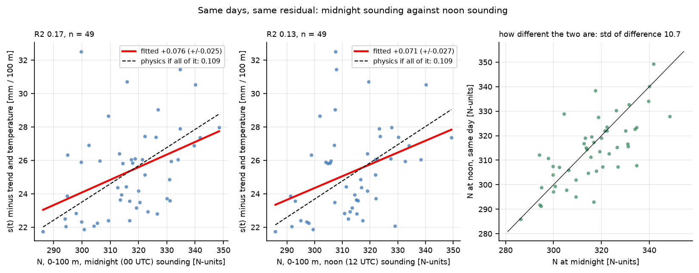

The first look at the TerraSAR-X data over Kop van Zuid, Rotterdam, in the order we made the plots. Every one is produced by a script in the team repository, so it can be regenerated.
Heights are metres above ground unless a plot says otherwise. "LOS" means line of sight: the direction from the satellite to the point. "s(t)" is the height gradient: how much the displacement changes per 100 m of height, on one satellite pass.
01. Six maps of the 20 594 points. Height above ground, coherence (how stable the point is), a quality number, the long-term rate of movement, the acceleration, and the size of the yearly up-and-down.02. Three points, ten years. Displacement over time for a point near the ground, one mid-height and one high up. The wiggles are what we work with.03. The thermal signature. The yearly up-and-down grows with height: about 0.032 mm per metre. Buildings expand in summer, and that is the biggest competitor to the air signal.04. How much height we have to work with. Half the points lie within 31 m of each other. Nothing above 83 m, although 150 m towers stand in the scene.

05. When the satellite passed. Every 11 days, about 31 times a year, in every season. The largest gap is 44 days.06. Is there a height-dependent signal at all? Top: the average movement of points in four height bands. Middle: the height gradient s(t) per pass. Bottom: how strongly displacement and height are related on each pass.

07. The yearly cycle of the height gradient. High in summer, low in winter: buildings expanding, mostly.08. Taking the gradient apart. A slow trend and a yearly cycle are removed. What is left, about 1.7 mm per 100 m from pass to pass, is the candidate air signal. Three times above the noise of the fit.

09. Two ways to the same number. The yearly height gradient computed from single points and from the whole scene agree to within 7 %, once the timing of the cycle is kept.10a. Two halves, split along the scene. The pass-to-pass changes agree between independent halves (correlation 0.92), so the fast signal covers the whole scene. The slow sinking sits in one half only.

10b. Two halves, split east to west. Same test, different cut, same answer.11. The points on the city. Every radar point on aerial imagery, coloured by height above ground. You can see the facades.

12. Four fields on the map. Height, long-term rate, yearly amplitude and coherence, on the same map.

13. Where the halves are. The split used for figure 10, next to the long-term rate. The sinking is on the north-east side.

14. The two suspects. The height gradient (top), Rotterdam air temperature with a lag (middle), and the humidity-related refractivity from the De Bilt balloon (bottom).15. Telling buildings and air apart. Fitting both at once, on 11-day changes, separates them cleanly. Both come out at 60 to 70 % of what physics predicts.

16. Midnight or noon? On days with both balloon launches, the noon one explains the signal no better than the midnight one. Time of day is not the gap; distance probably is.17. Line or curve? Points grouped by height. A straight line explains the height differences; there is not yet a visible curve, so the retrieval is a mean layer value, not a profile.18. Neighbours only. The same gradient from pairs of points a few tens of metres apart gives 82 % of the scene-wide value. The signal is really about height, not about location.19. What the balloon says. The De Bilt sounding usually has its first reading about 650 m up, so everything below 83 m is interpolated. The pressure part of the layer is predictable; the humidity part is the signal.